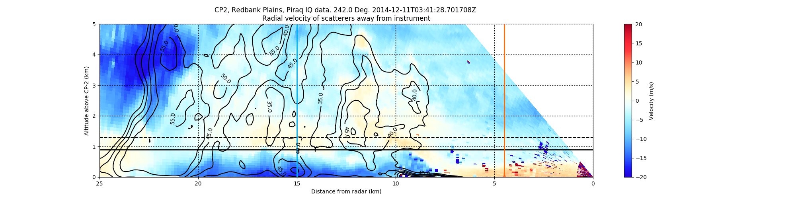

Create an RHI plot with reflectivity contour lines from an MDV file¶
An example which creates an RHI plot of velocity using a RadarDisplay object and adding Reflectivity contours from the same MDV file.
Python source code: plot_rhi_data_overlay.py
print(__doc__)
# Author: Cory Weber (cweber@anl.gov)
# License: BSD 3 clause
import matplotlib.pyplot as plt
import pyart
import numpy as np
import scipy.ndimage as spyi
filename = '034142.mdv'
# create the plot using RadarDisplay
sweep = 2
# read file
radar = pyart.io.read_mdv(filename)
display = pyart.graph.RadarDisplay(radar)
fig = plt.figure(figsize=[20, 5])
ax = fig.add_subplot(111)
# plot velocity
# cmap is the color ramp being used in this case blue to red no 18
# https://github.com/ARM-DOE/pyart/blob/master/pyart/graph/cm.py
# for more information
display.plot('velocity', sweep=sweep, vmin=-20, vmax=20.0, fig=fig,
ax=ax, cmap='pyart_BuDRd18', colorbar_label='Velocity (m/s)')
# line commented out to show reflectivity
# display.plot('reflectivity', sweep=sweep, vmin=-0, vmax=45.0, fig=fig,ax=ax)
# get data
start = radar.get_start(sweep)
end = radar.get_end(sweep) + 1
data = radar.get_field(sweep, 'reflectivity')
x, y, z = radar.get_gate_x_y_z(sweep, edges=False)
x /= 1000.0
y /= 1000.0
z /= 1000.0
# smooth out the lines
data = spyi.gaussian_filter(data, sigma=1.2)
# calculate (R)ange
R = np.sqrt(x ** 2 + y ** 2) * np.sign(y)
R = -R
display.set_limits(xlim=[25, 0], ylim=[0, 5])
# add contours
# creates steps 35 to 100 by 5
levels = np.arange(35, 100, 5)
# adds coutours to plot
contours = ax.contour(R, z, data, levels, linewidths=1.5, colors='k',
linestyles='solid', antialiased=True)
# adds contour labels (fmt= '%r' displays 10.0 vs 10.0000)
plt.clabel(contours, levels, fmt='%r', inline=True, fontsize=10)
# format plot
# add grid (dotted lines, major axis only)
ax.grid(color='k', linestyle=':', linewidth=1, which='major')
# horizontal
ax.axhline(0.9, 0, 1, linestyle='solid', color='k', linewidth=2)
ax.axhline(1.3, 0, 1, linestyle='dashed', color='k', linewidth=2)
# vertical
ax.axvline(15, 0, 1, linestyle='solid', color='#00b4ff', linewidth=2)
ax.axvline(4.5, 0, 1, linestyle='solid', color='#ff6800', linewidth=2)
# setting matplotlib overrides display.plot defaults
ax.set_ylabel('Altitude above CP-2 (km)')
plt.show()
Total running time of the example: 0.70 seconds